刃具量具
50 项 · 已选 49 项
切割类
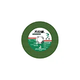
✓砂轮片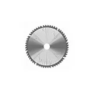
✓合金锯片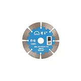
✓云石锯片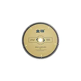
✓木工圆锯片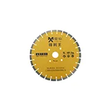
✓马路锯片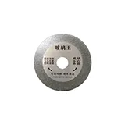
✓玻璃切片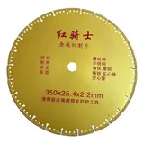
✓钎焊锯片钻咀类
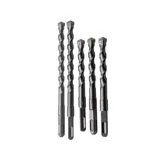
✓冲击钻咀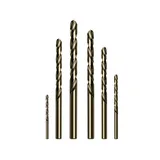
✓不锈钢钻咀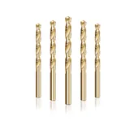
✓麻花钻咀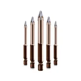
✓玻璃钻咀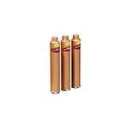
✓水钻咀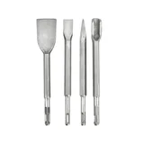
✓电锤凿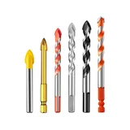
✓陶瓷钻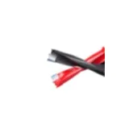
✓木工排钻开孔器类
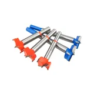
✓木工开孔器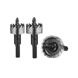
✓金属开孔器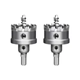
✓合金开孔器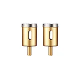
✓大理石开孔器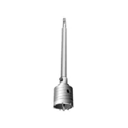
✓墙壁开孔器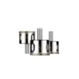
✓玻璃开孔器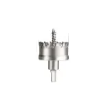
✓不锈钢开孔器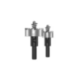
✓铁工开孔器刃刀类
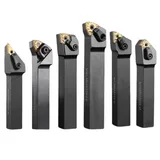
✓车刀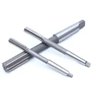
✓铰刀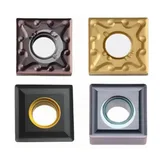
✓钨钢合金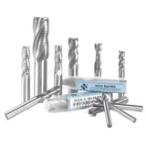
✓铣刀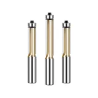
✓修边刀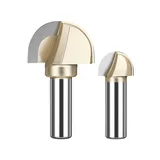
✓圆底刀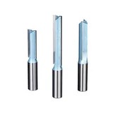
✓直刀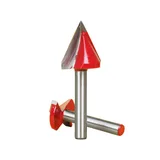
✓V型刀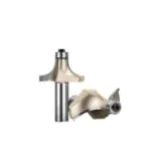
✓圆角刀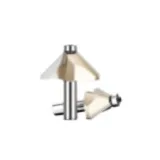
✓45°斜角刀丝锥
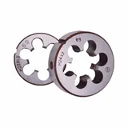
✓板牙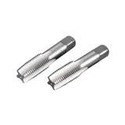
✓手用丝锥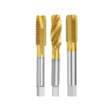
✓机用丝锥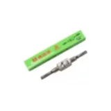
✓丝锥扳手尺类
✓卷尺
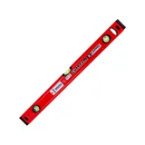
✓水平尺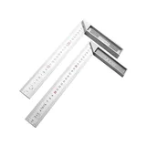
✓角尺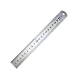
✓直尺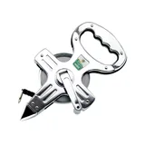
✓插尺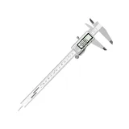
✓卡尺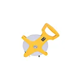
✓纤维尺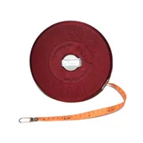
✓布尺/麻带尺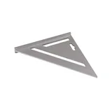
✓三角尺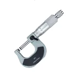
✓千分尺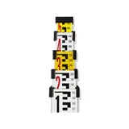
✓标尺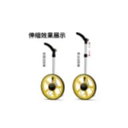
✓测距轮表类
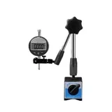
百分表